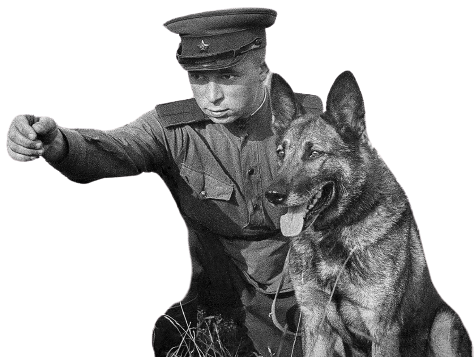

Гісторыя Вялікай Айчыннай вайны, як і гісторыя ў цэлым, складаецца з фактаў. У гэтым раздзеле сайта можна праверыць свае
веды, адказаўшы на пытанні розных тэстаў. Мы рэгулярна дадаем новыя тэсты на сайт.
ТЭСТ «ВАЙНА»
У 4 гадзіны раніцы без аб'яўлення вайны гітлераўская Германія напала на Савецкі Саюз. Наперадзе быў доўгі, цяжкі і
кровапралітны дзень - першы дзень вайны. Падзеі гэтага дня шмат у чым вызначылі ход далейшых баявых дзеянняў.
ТЭСТ «ФІЛЬМЫ»
Фільмы пра вайну і Перамогу - гэта невялікія вокны ў іншы свет, дзе людзі жылі надзеяй на мірную будучыню. Героі гэтых
фільмаў выхавалі не адно пакаленне нашых суайчыннікаў сваім высакародным прыкладам.
ТЭСТ «БІТВЫ»
Тэст прысвечаны найважнейшым бітвам і аперацыям ў гісторыі Вялікай Айчыннай Вайны! Розныя гісторыі ў розных гарадах!
ТЭСТ «ЛІТАРАТУРА»
Тэст прысвечаны кнігам, вершам і песням пра Вялікую Айчынную Вайну!
ТЭСТ «ПАРТЫЗАНЫ»
Партызаны і падпольшчыкі падчас Вялікай Айчыннай вайны былі сапраўдным "другім фронтам", які дапамагаў Чырвонай Арміі
весці барацьбу з фашысцкімі захопнікамі. На захопленых тэрыторыях дзейнічалі атрады, якія падрывалі нямецкія эшалоны,
даставалі стратэгічную інфармацыю, вялі ўзброенае супраціўленне.

А вы ведалі што ...
На полі бою сабакі-санітары падпаўзалі да параненага салдата і падстаўлялі яму медыцынскую торбу. Цярпліва чакалі пакуль
салдат перавяжа рану і паўзлі да другога салдата. Таксама сабакі добра ўмелі адрозніваць жывога салдата ад мёртвага. Бо
многія параненыя былі ў непрытомным стане. Такім салдатам сабакі лізалі твар, пакуль яны не ачнуцца.